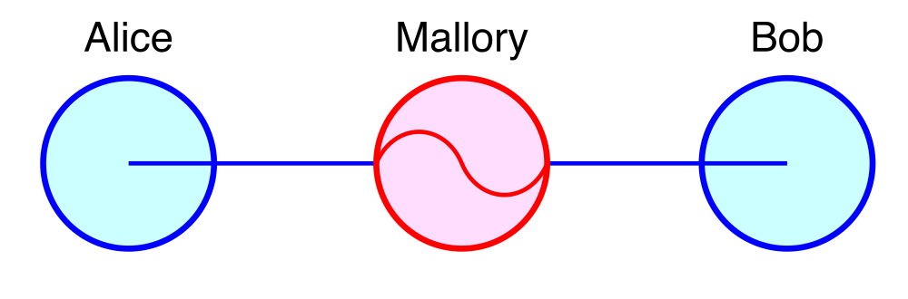
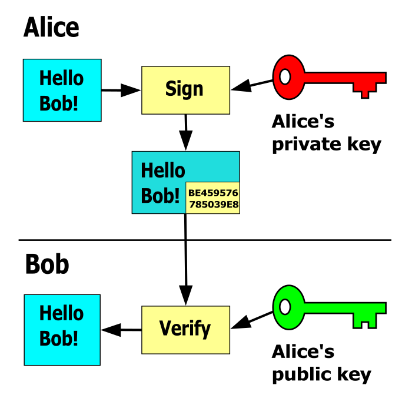

SSL, the original Secure Sockets Layer protocol, was first published in 1995 and is now deprecated. TLS replaced it in 1999, and its latest version is TLS 1.3, published in 2018. TLS certificates are often still called “SSL certificates”.
TLS/SSL Certificates
Learn what a TLS certificate is, why a browser trusts one, and how to obtain one for free from Let’s Encrypt.
On this page
Table of contents
Recommended reading
The problem TLS solves
Plain HTTP sends everything in clear text. Between your browser and a server, your requests cross many machines that you do not control: the Wi-Fi access point, your Internet provider’s routers, and others along the way. Anyone in control of one of them can:
- Read what you send and receive, such as a password or the contents of a page.
- Modify it, for example to insert something into a page.
- Pretend to be the server, and answer in its place. This is a man-in-the-middle attack.

Diagram by Miraceti, CC BY-SA 3.0, from Wikimedia Commons.
The Transport Layer Security (TLS) protocol solves these problems. It encrypts the traffic so that nobody else can read or modify it, and it authenticates the server so that you know who you are talking to. HTTPS is HTTP sent through a TLS connection, by default on port 443 instead of 80.
Note
You have seen this problem before
SSH solves the same problem. When it establishes a secure channel, the client and the server agree on a secret encryption key with a Diffie-Hellman key exchange, and the server signs the exchange with its private key. Your SSH client checks the signature with the server’s public key.
The difficulty is knowing that this public key is really the server’s. As explained in the SSH subject, the first time you connect, an attacker could send you their own public key instead. You solved this yourself, by comparing the key’s fingerprint with one obtained from a trusted source.
A browser cannot ask you to check a fingerprint for every site you visit. TLS solves this differently: a third party that your browser already trusts, a certificate authority, vouches that the public key belongs to the site. It does so in a certificate.
What a certificate is
A public key certificate binds a name to a public key, and is signed by someone who vouches for that binding, its issuer. A TLS certificate contains:
- The domain names it is valid for, such as
example.comandwww.example.com, or a wildcard such as*.example.com, which is valid for every subdomain ofexample.com. - The server’s public key.
- The dates between which it is valid.
- The name of its issuer.
- The issuer’s digital signature of all of the above.
A certificate is not a secret. The server sends it to every client that connects, and anyone can download it. The secret is the private key that goes with the public key in the certificate, and it never leaves the server.
How a browser connects over HTTPS
Simplified, this is what happens when your browser opens a connection to
https://example.com:
- The browser connects to the server on port 443.
- The browser and the server agree on a cipher suite: the algorithms they both support.
- They agree on a shared secret key with a Diffie-Hellman key exchange, as SSH does. The key itself never travels over the network.
- The server sends its certificate, and signs the handshake with its private key.
- The browser checks the certificate: that it is valid for
example.com, that it has not expired, and that it is signed by an issuer the browser trusts. It then checks the server’s signature with the public key in the certificate. - Both use the shared key to encrypt all the HTTP traffic, with fast symmetric encryption.
The certificate alone proves nothing, since anyone can copy it. An attacker
could send your browser a copy of example.com’s certificate, but could not
sign the handshake without example.com’s private key. The signature is what
proves that the server holds that private key, and the certificate is what
proves that this key belongs to example.com.

Diagram by FlippyFlink, CC BY-SA 4.0, from Wikimedia Commons.
A digital signature works as in this diagram, with the server as Alice and the browser as Bob: only the holder of the private key can sign, and anyone with the public key can verify the signature.
If any check fails, the browser refuses to show the page, and shows a warning instead.
The chain of trust
A browser trusts a certificate because of who signed it, and trusts that signer because of who signed its own certificate, and so on, up to a certificate that the browser already has.

Diagram by Yanpas, CC BY-SA 4.0, from Wikimedia Commons.
Certificate authorities
A certificate authority (CA) is an organization that issues certificates. It has a key pair of its own. It signs your certificate with its private key, and anyone who has its public key can check the signature.
But how does the browser get the public key of the certificate authority, and know that it is really the authority’s? From another certificate: the certificate authority has one of its own, which contains its public key.
Intermediate and root certificates
This leads to a chain of trust:
- Your certificate, the end-entity certificate, is signed by an intermediate certificate authority.
- The intermediate certificate is signed by a root certificate authority. There may be more than one intermediate certificate in between.
- The root certificate is self-signed: it is signed with its own private key.
A certificate authority keeps the private key of its root certificate offline, and signs its customers’ certificates with the keys of its intermediate certificates. If an intermediate key is compromised, it can be replaced without replacing the root.
The server sends its own certificate and the intermediate certificates to the browser. The root certificate is not needed: the browser already has it.
Trusted root certificates
A self-signed root certificate is technically no different from a certificate you could generate yourself on your own computer. What makes it trusted is that it is in a list of trusted root certificates installed with your browser or your operating system.
To be included in these lists, a certificate authority must be accepted by the programs of the vendors, such as the Chrome Root Program or Mozilla’s. They require regular audits, and follow rules written by the CA/Browser Forum, where certificate authorities and browser vendors agree on them. A certificate authority that breaks these rules can be removed from the lists, and the certificates it issued stop being trusted.
When your browser checks a certificate, it follows the chain up to a root certificate, and the certificate is valid only if that root is in its list.
Self-signed certificates
A certificate you generate and sign yourself, with a tool such as openssl, is
a self-signed certificate. It encrypts the traffic like any other, but no
browser trusts it, since it is not in any list: your browser shows a warning
such as NET::ERR_CERT_AUTHORITY_INVALID. Self-signed certificates are useful
for testing, or between machines that you configure to trust them, but not for a
public website.
Obtaining a certificate
A certificate authority does not issue a certificate to just anyone. This section describes what it checks before it does, what you may pay it for, and how long a certificate lasts.
Domain validation
Before a certificate authority issues a certificate for a domain name, you must prove that you control that domain. The most common methods are:
- HTTP validation: The certificate authority gives you a random token, and
asks you to make it available at
http://example.com/.well-known/acme-challenge/<token>. It then connects toexample.comon port 80, from its own servers on the Internet, and checks that it gets the token back. This proves that you control the server that the domain points to. The domain must therefore already point to your server, and your server must already answer on port 80. - DNS validation: The certificate authority asks you to put the token in a
TXTrecord of the domain’s DNS zone. This proves that you control the DNS zone of the domain. It is the only way to obtain a wildcard certificate: a file on one server does not prove that you control every name under the domain. - Email validation: The certificate authority sends a validation link to an
address such as
admin@example.com, which only the administrator of the domain should receive.
These prove that you control the domain, not who you are. That is all a browser needs to know that it is talking to the right server.
Free and paid certificates
Some certificate authorities, such as DigiCert or Sectigo, sell certificates. Paying can get you a certificate that is compatible with older clients, or a warranty if the certificate authority makes a mistake.
You can also pay for an Extended Validation (EV) certificate, for which the certificate authority also checks the legal identity of the organization that owns the domain. Browsers used to show that organization’s name in a “green bar” next to the address, but stopped in 2019, since studies showed that users did not notice it. An EV certificate encrypts connections exactly like any other.
Certificate lifetimes
Every certificate has an end date. The shorter its lifetime, the shorter the time a stolen private key or a wrongly issued certificate can be abused. The CA/Browser Forum voted in 2025 to shorten the maximum lifetime of certificates step by step:
| Since | Maximum lifetime |
|---|---|
| 2020 | 398 days |
| March 2026 | 200 days |
| March 2027 | 100 days |
| March 2029 | 47 days |
A certificate must be renewed before it expires, or browsers refuse it. With lifetimes this short, nobody can renew certificates by hand: renewal must be automated.
Let’s Encrypt
Let’s Encrypt is a free certificate authority, run for the public’s benefit by the Internet Security Research Group (ISRG). It has issued certificates since 2015, and has become the largest certificate authority in the world. Its root certificate is in the lists of every major browser and operating system.
Let’s Encrypt is automatic: nobody at Let’s Encrypt ever looks at a request. A program on your server requests a certificate, proves that you control the domain, and renews the certificate before it expires, through an open protocol, ACME (Automatic Certificate Management Environment). Its certificates are valid for 90 days, and will be valid for 45 by 2028.
Certbot, made by the Electronic Frontier Foundation (EFF), is one such program. It talks to Let’s Encrypt for you, completes the HTTP validation through your web server, saves the certificate and its private key on your server, and can configure nginx to use them. On Ubuntu, a systemd timer runs it regularly to renew the certificates that are about to expire.
Certificate Transparency
Let’s Encrypt, like every trusted certificate authority, publishes every certificate it issues in public Certificate Transparency logs, which anyone can search, for example with crt.sh. Browsers require it: this way, a certificate issued by mistake, or by an attacker, for a domain that is not theirs, cannot go unnoticed.
A consequence is that the names you obtain certificates for are public as soon as they are issued. Bots read these logs and start probing new names within minutes.
Where TLS ends
When nginx is used as a reverse proxy in front of an application, the browser’s TLS connection ends at nginx. nginx holds the certificate and its private key, decrypts the browser’s requests, and forwards them to the application over plain HTTP, on the server’s loopback address. It then encrypts the application’s answers for the browser. This is called TLS termination.
Browser ---HTTPS (port 443)---> nginx ---HTTP (127.0.0.1)---> applicationThe traffic between nginx and the application is not encrypted, but it never leaves the server. The application does not change at all to be served over HTTPS, and a single nginx can do this for every site on the server.